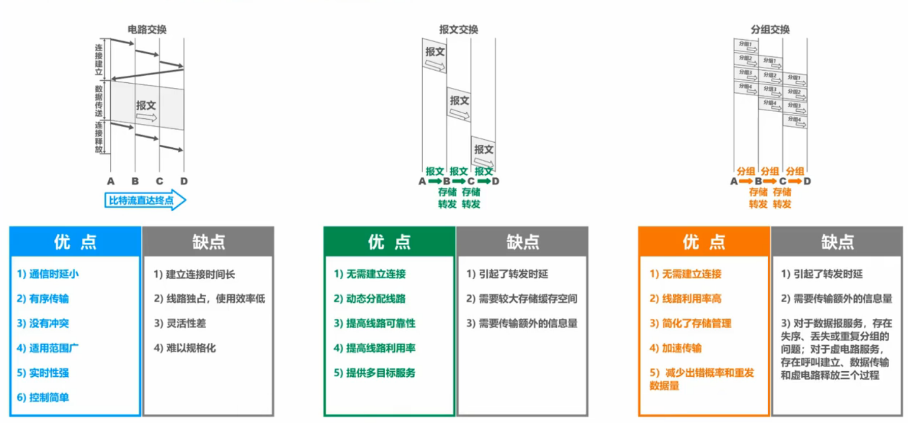

第一章 概述
- host： 即主机。网络把许多计算机连接在一起，而互连网则把许多网络通过路由器连接在一起。与网络相连相连的计算机常称为主机。
- ISP： 互联网服务提供商，上网就是通过ISP获得IP地址接入互联网。
- IXP： 互联网交换结点，其重要作用就是允许两个网络直接相连并交换分组，而不需要通过第三个网络来转发分组。典型的IXP由一个或多个网络交换机组成。
互联网的组成
核心部分： 由所有连接在互联网上的主机组成。这部分是用户直接使用的，用来进行通信（传送数据、音频或视频）和资源共享。
边缘部分： 由大量网络和连接这部分网络的路由器组成。这部分是为边缘部分提供服务的（提供连通性和交换）。
计算机之间的通信方式
- C/S方式 ： 即客户-服务器方式，描述的是进程之间服务与被服务的关系。
- 客户程序
- 在被用户调用后运行，在通信时主动向远程服务器发起通信（请求服务），因此客户程序必须知道服务器程序的地址。
- 不需要特殊的硬件和很复杂的操作系统。
- 服务器程序
- 是一种专门用来提供某种服务的程序，同时可处理多个远地或本地客户请求。
- 系统启动后即自动调用并已知不断的运行着，被动的等待或接受来自各地的通信请求。因此，服务器程序不需要知道客户程序的地址。
- 一般需要由强大的硬件和操作系统的支持。
- P2P方式： 即对等连接方式，指两台主机通信时不区分哪一个是请求方哪一个是服务方。只要两台主机都运行了P2P软件，它们就能进行平等的、对等连接通信。这时双方都可以下载对方已存储在硬盘中的共享文件。
三种交换方式及其比较
- 路由器： router，实现分组交换的关键构件，其任务是转发收到的分组，这就是网络核心部分最重要的功能。
- 交换（switching） : 就是按照某种方式动态地分配传输线路的资源。
- 电路交换（circuit switching）
- 步骤：
- 建立连接–>通话–>释放连接
- 从建立连接到释放连接的全部通话时间内，通话的两个用户始终占用端到端的通信资源。
分组交换（packet switching）
- 步骤：
- 将报文划分成若干个等长的数据段，然后给各数据段添加首部（包含重要的控制信息）构成分组。
- 结点交换机（路由器）对分组进行存储转发。
- 分组从源主机到目的主机，可走不同的路径。
报文交换（message switching）
与分组交换类似但不限制报文的长度对结点交换机的存储空间要求高。
三种交换方式的比较

计算机网络的类别
- 按网络的作用范围分类
- 广域网WAN
- 城域网MAN
- 局域网LAN
- 个人区域网PAN，无线个人区域网WPAN
- 按网络的使用者分类
- 公用网
- 专用网
- 用来把用户接入到互联网的网络
- 接入网AN（Access Network），接入网本身既不属于互联网的核心部分也不属于互联网的边缘部分。接入网是从某个用户端系统到互联网中的第一个路由器（也称为边缘路由器）之间的网络。
计算机网络的性能指标
1. 速率
数据的传送速: 也称数据率（data rate）或比特率（bit rate）,单位是bit/s，有时写作b/s或bps。注意和码元传输速率区分。
- 注意比特和速率中的单位、大小写字母和换算：
- 与码元传输速率的区分：
- 信息传输速率：别名信息速率、比特率，表示单位时间内通过数字通信系统的二进制码元个数，即比特数。（也就是速率）
- 码元传输速率：别名波形速率、调制速率、符号速率等，表示单位时间内数字通信系统所传输 的码元个数。单位波特（Baud）。
2. 带宽（bandwidth）
- 通信线路中的带宽： 表示通信线路运行通过的信号频带范围。单位Hz。
- 计算机网络中的带宽： 表示网络的通信线路所能传送数据的能力，表示单位时间内某信道能够通过的最高数据率。单位bit/s。
3. 吞吐量（throughput）
吞吐量： 表示单位时间内通过某个网络（或信道、接口）的实际数据量，显然其受带宽或网络额定速率的限制。单位bit/s。
4. 时延（delay/latency）
时延： 指数据从网络的一段传送到另一端所需的时间。有时也称延迟或迟延。它由发送时延、传播时延、处理时延、排队时延四个部分构成。
- 时延四部分
- 发送时延：transmission delay，是主机或路由器发送数据帧所需要的时间，也叫传输时延。它与信道长度没有任何关系。计算公式为：发送时延 = 数据帧长度(bit) / 发送速率(bit/s)。
- 传播时延：propagation delay，是电磁波在信道中传播一定距离需要花费的时间。它与信号的发送速率无关，而与信道长度相关。计算公式为：传播时延 = 信道长度(m) / 电磁波在信道上的传播速率(m/s)。
- 处理时延：主机或路由器在收到分组后需要花费一定的时间进行处理。
- 排队时延：排队等待处理、排队等待转发。
5. 时延带宽积
时延带宽积： 以比特为单位的链路长度。计算公式为：时延带宽积 = 传播时延 × 带宽
6. 往返时间RTT
往返时间RTT： 指从数据发送端发送数据开始，到发送端收到来自接收端的确认总共经历的时延。
7. 利用率
利用率有信道利用率和网络利用率两种。
- 信道利用率： 指出某信道有百分之几的时间是被利用的（有数据通过）。
- 网络利用率： 全网络信道利用率的加权平均值。
根据排队论，当某信道的利用率增大时，该信道引起的时延也会迅速增大。因此，信道利用率并非越高越好。也不能使信道利用率太低，这会使宝贵的通信资源被白白浪费。
8. 丢包率
丢包率： 即分组丢失率，是指在一定的时间范围内，传输过程中丢失的分组数量与总分组数量的比率。具体可分为接口丢包率、结点丢包率、链路丢包率、路径丢包率、网络丢包率等。
- 分组丢失主要有两种情况：
- 分组在传输过程中出现误码，被结点丢弃；
- 分组到达一台队列已满的分组交换机时被丢弃；在通信量较大时就可能造成网络拥塞。
网络协议
网络协议： 是控制两个对等实体进行逻辑通信的规则的集合。
- 协议的三要素
- 语法：定义所交换信息的格式。例如，IP数据报的格式。
- 语义：定义通信双方所要完成的操作。例如，主机HTTP的GET请求给Web服务器，Web服务器收到后执行相应的操作，然后给主机发回HTTP的响应。
- 同步：定义通信双方的时序关系。例如，TCP的“三报文握手”建立连接。
协议数据单元PDU： 对等层次之间传送的数据包称为该层的协议数据单元PDU。
- 各层的协议数据单元：
- 应用层：报文(message)
- 运输层：TCP报文段(segment)或UDP用户数 据报(datagram)
- 网络层：分组(packet)或IP数据报
- 数据链路层：帧(frame)
- 物理层：比特流(bit stram)
计算网络体系结构
- OSI七层体系结构
- 物理层
- 数据链路层
- 网络层
- 运输层
- 会话层
- 表示层
- 应用层
- TCP/IP四层体系结构
- 网络接口层：类似于OSI模型的物理层和数据链路层，但并没有规定什么具体的内容，目的是为了可以互连各种各样的网络接口。
- 网际层：核心协议是IP协议，它可以互连各种不同的网络接口，并给运输层的TCP协议和UDP协议提供服务。
- 运输层：功能是使发送端和目的端上的对等实体进行绘画。
- 传输控制协议（TCP协议）在享受IP协议提供的服务后，可向应用层的相应协议（例如，HTTP，SMTP等）提供可靠传输的服务。
- 用户数据报协议（UDP协议）在享受IP协议提供的服务后，可向应用层的相应协议（例如，DNS，RTP等）提供不可靠传输的服务。
- 应用层：通过应用进程间的交互来完成特定网络应用。如简单电子邮件传输(SMTP)、文件传输协议(FTP)、网络远程访问协议(Telnet)等。
- 计算机网络五层协议原理体系结构
由于TCP/IP为了互连各种网络接口，其网络接口层并没有什么具体内容，这对于我们学习计算机网络原理来说，不够完整。因此，结合OSI和TCP/IP的优点，提出一种五层协议的原理体系结构，以适用于教学。
- 物理层
- 数据链路层
- 网络层
- 运输层
- 应用层
实体、协议、服务和服务访问点
实体： 指任何可发送或接收信息的硬件或软件进程。
对等实体： 指通信双方相同层次中的实体。
协议是“水平的”，服务是“垂直的”。实体看得见相邻下层所提供的服务，但并不知道实现该服务的具体协议。也就是说，下面的协议对上面的实体是“透明”的。
服务访问点： 指在同一系统中相邻两层的实体交换信息的逻辑接口，用于区分不同的服务类型。数据链路层的服务访问点为帧的“类型”字段。网络层的服务访问点为IP数据报首部中的“协议字段”。运输层的服务访问点为“端口号”。
服务原语： 指上层使用下层所提供的服务必须通过与下层交换一些命令。
服务数据单元SDU： 指同一系统内，层与层之间交换的数据包。多个SDU可以合成为一个PDU；一个SDU也可划分为几个PDU。